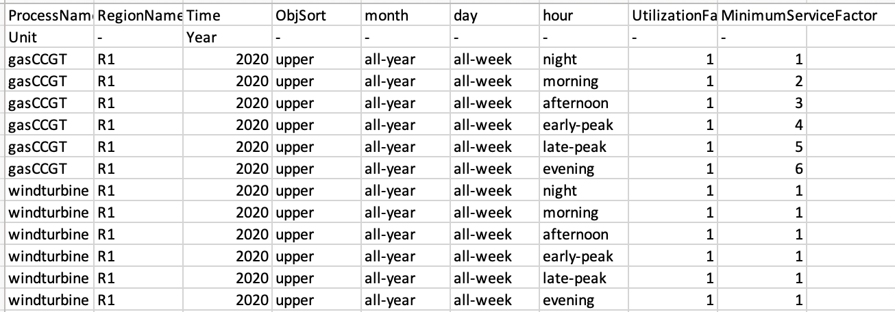

In this hands-on we explain how to add constraints to outputs of technologies at certain timeslices. This could either by a maximum constraint, for instance with the solar PV example mentioned in the previous lecture (lecture 2). Or, this could be a minimum constraint, where we expect a minimum amount of output by a nuclear power plant at all times.
In this tutorial we will be amending the same default example (default.zip) as in hands-on 2, which you can find in the following zenodo link: https://zenodo.org/record/6346284#.YisfUS-l1pQ
Firstly, we will be imposing a minimum service factor for gasCCGT (combined cycle gas turbine) in the power sector. This is the minimum that a technology can output per timeslice.
To do this, we will need to create a new csv file that specifies the minimum service factor per timeslice.
An example of the file, which also contains values for windturnine can be seen below and in the zenodo link.

Figure 3.1: TechnodataTimeslices.csv file for the power sector.
Notice that we have to specify the following columns: ProcessName, RegionName, Time, month, day, hour, UtilizationFactor, MinimumServiceFactor.
The majority of these columns are self explanatory, and correspond to the columns in other csv files - for instance, ProcessName, RegionName and Time. The timeslice based columns, however, are dynamic and will match the levels as defined in the toml file.
The majority of these columns are self explanatory, and correspond to the columns in other csv files - for instance, ProcessName, RegionName and Time. The timeslice based columns, however, are dynamic and will match the levels as defined in the settings.toml file in the main default folder.
We need to link the TechnodataTimeslices.csv file to the MUSE model. So to do this, we must enter into the settings.toml file and under the [sectors.power] add the line technodata_timeslices = '{path}/technodata/power/TechnodataTimeslices.csv' as shown below. Although we must ensure that the TechnodataTimeslices.csv is in the /technodata/power/ folder of the default example.
[sectors.power]
type = 'default'
priority = 2
dispatch_production = 'costed'
technodata = '{path}/technodata/power/Technodata.csv'
commodities_in = '{path}/technodata/power/CommIn.csv'
commodities_out = '{path}/technodata/power/CommOut.csv'
technodata_timeslices = '{path}/technodata/power/TechnodataTimeslices.csv'Once this has been completed, we are able to run MUSE as before, with the following command:
python -m muse settings.tomlWe can then view the results as before using Excel.
Next, we want to ensure that the supply of windturbine does not exceed a certain value during the day. This may be because, for example, there is reduced wind during the day. We will, therefore, modify the TechnodataTimeslices.csv file by changing the values of UtilizationFactor. This is shown in the figure below, where we change the morning and afternoon timeslices to be 0.5, as an example.
Figure 3.2: Edited TechnodataTimeslices file opened in Excel.
Once this has been saved, we can run the model again (python -m muse settings.toml). We can then visualise our results as before.
In this hands-on we have introduced the TechnodataTimeslices.csv file, and linked it to the settings.toml file. This has allowed us to vary the output of various energy technologies by their characteristics.